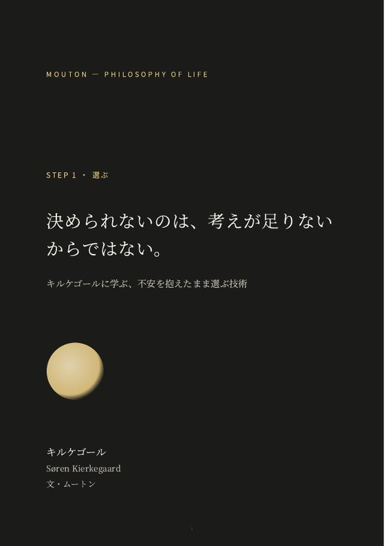
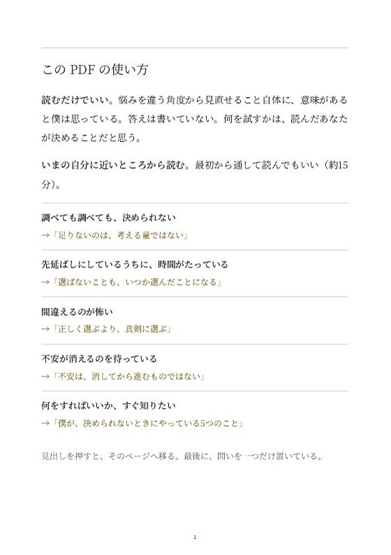
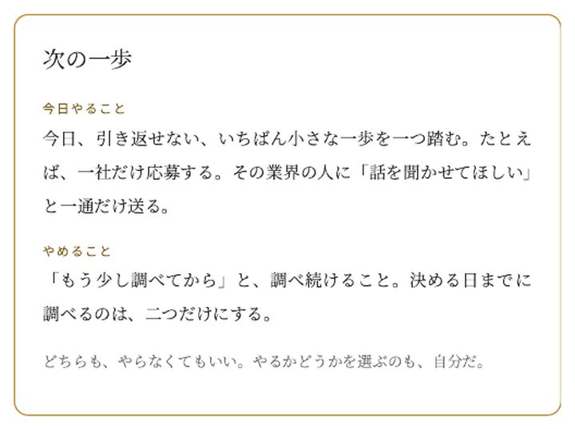

考えれば考えるほど、決められなくなっていく。
決められないのは、考えが足りないからではない。
キルケゴールに学ぶ、不安を抱えたまま選ぶ技術。有料記事（PDF）。
- こんな悩みに
- 考えすぎて決められない。つい先延ばしにする。
- 読んで、考えられること
- 何と何のあいだで迷っているのかを、見つめ直せる
- 怖さの正体と、それが取り返しのつくことかどうかを考えられる
- 正しく選ぶより、真剣に選ぶとはどういうことかを考えられる
- 届くもの・価格
- PDF（全文 約15分）
2,980円（税込） - いま
- 販売準備中。見本は無料で読めます。
これ以上調べ続けず、気合いにも頼らずに。キルケゴールの「不安を抱えたまま選ぶ」考え方を、15分で読める記事にした。
01 ／ 見本
実物の見本
販売する記事（PDF）の冒頭を、そのまま載せている。
夜、転職サイトを開く。気になる求人を三つ保存して、口コミを読んで、年収を比べる。一時間たって、何も決めないまま閉じる。
次の週も、同じことをくり返す。保存した求人は増えていくのに、応募ボタンは一度も押していない。
独立を考えている人なら「もう少し貯金ができたら」。人間関係なら、既読のまま三日たったLINEを前に「次に会ったときに話そう」。迷っている中身は違っても、口にする言葉はよく似ている。
もう少し考えてから、決めよう。
そう言っているうちに、季節が一つ変わる。そして、決められない自分を「優柔不断だ」と責める夜が、また一つ増える。
足りないのは、考える量ではない
決められないとき、僕らはたいてい、自分の考えが足りないのだと思う。情報が足りない。比較が足りない。だから、もう一本記事を読み、もう一人に相談する。
でも、調べるほど決めやすくなったかといえば、たいていは逆だ。新しい情報は、新しい選択肢を連れてくる。A社とB社で迷っていたはずが、いつのまにか「今の会社に残る道もある」「いっそ独立という手も」と、比べるものが増えていく。
僕にも覚えがある。比べるための表をつくり、項目を足し、点数をつけ直す。表は細かくなっていくのに、気持ちは少しも動かない。
あのとき待っていたのは、情報ではなかったのだと思う。待っていたのは、「これで間違いない」という確信だった。この道なら後悔しない、と誰かに保証してもらえる感覚。それさえ手に入れば、すぐにでも動けるのに、と思っていた。
ところが、確信は選ぶ前には来ない。選んでいない道がどうなるかは、選ばないかぎり分からないからだ。来ないものを待っているから、待つ時間が終わらない。
考えすぎて決められないのは、考えが足りないからではない。選んだあとにしか来ないものを、選ぶ前に待っているからなのかもしれない。
婚約を、自分から解消した哲学者
この苦しさを、理論ではなく自分の人生で味わった哲学者がいる。19世紀デンマークの、セーレン・キルケゴールだ。
1840年、27歳のキルケゴールは、18歳のレギーネ・オルセンと婚約した。けれど1年もたたない1841年8月、彼は指輪を送り返す。婚約が正式に終わったのは、同じ年の10月だった。その直後、彼はベルリンへ発つ。
彼女を嫌いになったわけではなかった。彼はその後も、日記や本の中でレギーネのことを書き続けている。
外から見れば、彼は「決めた人」だ。自分から指輪を返したのだから。けれど、決めたからといって、迷いが終わったわけではなかった。
彼は、決めたあとも揺れ続けた人だった。1843年の日記には、こんな一文が残っている。
もし僕に信仰があったなら、レギーネのもとにとどまっていただろう。 ——1843年の日記（要約）
キルケゴールにとって、信仰は生涯の問いだった。ただ、ここで見てほしいのは、この文の形のほうだ。「〜だったなら、〜しただろう」。選んだあとも、彼は選ばなかったほうの道を考え続けている。
同じ1843年、彼は『あれか、これか』という本を出す。題名のとおり、選ぶことをめぐる本だ。選ぶことに苦しんだ人が、選ぶことについて書いた。だから彼の言葉は、今も迷っている人の手元に届く。
可能性の中で、一歩も動かない
1849年の『死に至る病』で、キルケゴールは、人が自分自身になれずにいる状態を細かく分けている。そのなかに、今の僕らにそのまま重なる一節がある。
可能性ばかりがふくらみ、それを地面につなぎとめるもの——彼の言葉でいえば「必然性」——が欠けている状態だ。そうなると人は、可能性の中でもがくように自分を試し続けるが、その場から一歩も動かない（要約）。
僕は「必然性」を、自分の現実のことだと読んでいる。年齢、貯金、今ある力、今いる場所。変えようのない、自分の足もとだ。
転職サイトのタブを増やしながら、何か月も同じ場所にいる。あれは怠けているのではない。頭の中では、むしろ忙しく動いている。ただ、可能性の中を動き回っているだけで、自分の現実の上では一歩も進んでいない。
比べる表が細かくなるのも、相談する相手が増えるのも、同じことだ。考えれば考えるほど、可能性は増える。増えた可能性の中を、また歩き回る。
キルケゴールはこれを、意志の弱さとしては書いていない。自分というもののつり合いが崩れた状態として書いている。だとすれば、必要なのは自分を責めることでも、気合いを入れ直すことでもない。崩れたつり合いを、取り戻すことだ。
では、どうすればいいのか。
— ここから先は有料 —
PDF の中身（実物の一部）






02 ／ 悩み
いま、こんな夜が続いていませんか。
- 転職サイトを開いては、何も決めずに閉じる夜が続いている
- 「もう少し調べてから」「貯金ができたら」と、決める日を先にのばしている
- 比べる表は細かくなるのに、気持ちは少しも動かない
- やることは分かっているのに、もう1本だけ動画や記事を探してしまう
- 決められない自分を「優柔不断だ」と責めてしまう
考えすぎて決められない。つい先延ばしにする。
03 ／ できること
読んだあとに
いま
調べても比べても決められず、気づけばまた「もう少し考えてから」と先延ばしにしている。
読んだあと
怖さが残ったまま選ぶのは弱さではなく、決める日を自分で決めることだ、という見方を手元に置ける。選んだことを自分のものとして引き受ける考え方も。
読むだけで、見え方が変わるかもしれない。
決められないのは、考えが足りないからではない。選んだあとにしか来ない確信を、選ぶ前に待っているからかもしれない。
有料にしているのは、情報の量ではなく、使いやすさのため。
- 自分の悩みに当てはめやすい。転職・独立・人間関係など、よくある場面の例に、あなたのことを重ねて読める。
- 必要なところにたどり着ける。最初のページに「いまの状態 → 読むところ」の地図。全部を読まなくても、いまのあなたに近いところから読める。
- 最後に、問いが一つだけ残る。答えは書いていない。何を試すかは、読んだあなたが決める。
地図の中身を見る
- 調べても調べても、決められない→「足りないのは、考える量ではない」
- 先延ばしにしているうちに、時間がたっている→「選ばないことも、いつか選んだことになる」
- 間違えるのが怖い→「正しく選ぶより、真剣に選ぶ」
- 不安が消えるのを待っている→「不安は、消してから進むものではない」
- 何をすればいいか、すぐ知りたい→「僕が、決められないときにやっている5つのこと」
扱うのは、ひとつの選択だけ。
対象：いま決められずにいる、ひとつの決断（転職・独立・人間関係など）
思想の全体像や、人生全体の自己分析は扱わない（それは本のほうが向いている）。変化を約束するものでもない。答えではなく、考える材料を置いた記事だ。
04 ／ 内容
内容と使い方
- 選ばないことも、いつか選んだことになる
- 正しく選ぶより、真剣に選ぶ
- 不安は、消してから進むものではない
- 確かさは、選んだあとに育つ
- 僕が、決められないときにやっている5つのこと
- おわりに
- 形式
- PDF（スマホ・パソコンで読める。印刷もできる）
- 受け取り
- お支払いのあと、入力したメールアドレスにダウンロード用のリンクが届く（有効期限7日・最大5回）
- 分量
- 全文 約15分。冒頭はこのページで無料で読める
- 地図
- 最初のページに「いまの状態 → 読むところ」
- 出典
- 引用には書名と節・章を明記。研究は著者・年・誌名つき
- 地図から読む。最初のページで、いまの自分に近いところを選ぶ。最初から通して読んでもいい。
- 時間をおいて、読み返してもいい。同じ文章でも、引っかかるところが変わることがある。
05 ／ 作る理由
ムートンが、これを作る理由
やり方は、状況が変わるとすぐに使えなくなる。岐路で必要なのは、新しいやり方より「自分は何を基準に選ぶのか」だと僕は思う。だからこの記事では、哲学者の考えを、よくある悩みの場面に当てて読めるようにした。答えは書いていない。何を試すかを決めるのは、読んだあなただ。
ほかの方法と、何が違うのか
ほかの方法を否定するためではない。どれも役に立つ場面がある。
原典にあたり、言えないことは言い切らない。それが、僕がこの記事でいちばん守っていることだ。考え方の全体は、「ムートンについて」に。
06 ／ 合うかどうか
あなたに合うかどうか
あなたがいま、こうなら合うかもしれない
- 転職・独立・人間関係など、いま決めたいことが一つある
- 情報を集めるのは得意なのに、最後の一歩が出ない
- 正解を教えてもらうより、自分で選べるようになりたい
こうなら、ほかを選んだほうがいいかもしれない
- 「これを選べば正解」という答えを教えてほしい
- キルケゴールの思想を、学術的に体系立てて学びたい
- お金・契約・健康など、専門家の判断がすぐに必要な決断の最中にいる
07 ／ 価格
価格と購入
キルケゴール — 決められないのは、考えが足りないからではない。
2,980円（税込）
PDF・全文 約15分
このサイトでの販売準備中買う前に、このページの冒頭（無料）で、文章が自分に合うかを確かめられます。お支払いは Stripe の決済画面で行い、お支払いのあと、入力したメールアドレスに PDF のダウンロード用リンクが届きます（リンクは7日間・5回まで有効）。現在は、購入・予約は受け付けていません。
08 ／ 質問
よくある質問
キルケゴールの本を読んだことがなくても大丈夫ですか？
大丈夫。必要な部分は、記事の中で要約して紹介している。原典の書名と章を添えているので、気になったら原典にもあたれる。
転職以外の決断にも使えますか？
使える。独立、人間関係、住む場所など、二つのあいだで迷って先延ばしになっている決断なら、同じ考え方が使える。
哲学の本やビジネス書と、何が違いますか？
本は、哲学者の考えを広く深く学ぶのに向いている。この記事は範囲を絞っている。いま抱えている、ひとつの悩みについて、自分で考えるところまで。一般的なビジネス書より少し高い値段にしているのは、知識を増やすことより、自分の悩みに当てて考えるところまでを、場面の例と読むところの地図で支えるものだからだ。
無料の記事とは、何が違いますか？
無料の記事は、悩みの見え方を変える一つの視点まで。有料の記事には、場面の例と、読むところの地図と、最後に残す問いがある。違いは情報の量ではなく、使いやすさだ。考え方が自分に合うかは、無料の入門記事で先に確かめられる。
3本とも読む必要がありますか？
ない。いまの悩みにいちばん近い1本からでいい。3人の哲学者の比較から選べる。
ムートンの考えを信じないと、使えませんか？
信じなくていい。書いてあるのは答えではなく、自分で確かめるための材料だ。読んで合わなかった考えは、使わなくていい。
買ったあと、ほかの商品や会員制の集まりに誘われますか？
誘わない。購入のときのメールアドレスは、PDF を届けることと、問い合わせへの返事にだけ使う。会員制のサロンや定期購読はない。
購入後の返品・返金はできますか？
購入前に、このページの冒頭（無料）で文章が合うかを確かめてほしい。返品・返金の条件は、販売を始めるときに「特定商取引法に基づく表記」に載せる。
購入したのに、メールが届きません。
まず、迷惑メールのフォルダを確かめてほしい。それでも届かないときは、お問い合わせから、購入した日と記事の名前を知らせてほしい（カード番号などは書かないでほしい）。
心の不調の治療の代わりになりますか？
ならない。眠れない、食べられない、気分の落ち込みが長く続くなど、生活に支障があるときは、まず医師や専門の相談窓口を頼ってほしい。
3本の流れ
3本は、一本の道でつながっている。
決められない。人の目が気になる。続かない。別々の悩みに見えて、僕には一本の道に見える。選ぼうとすると、誰の物差しで選ぶのかが問われる。選んだあとには、続けられるかが問われる。
-
1
選ぶ — キルケゴール
不安が消えるのを待たずに、選ぶ。
「決められないのは、考えが足りないからではない。」この記事
- 2
- 3
どこからでも読める。順番どおりでなくていいし、3本そろえる必要もない。いまいちばん近い悩みの1本からでいい。